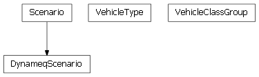
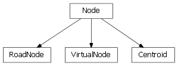

Installation¶
- Required python modules:
- numpy Efficient multi-dimensional container of generic data. Used for Demand data.
- la Labeled numpy arrays. Used for Demand data.
- Bottleneck Fast NumPy array functions. Required by la. Note: It might be easier to install a pre-compiled version of this, as directed on the documentation page.
- pyshp Python Shapefile Library for interpretting shapefiles for road geometry and for exporting shapefiles.
- pyparsing Enables parsing using simple grammars. Used for parsing TPPlus transit line files.
- Optional python modules:
Overview¶
DTA Anyway is a python module that facilitates network coding, analysis and visualization for DTA (Dynamic Traffic Assignment). This is a stub file to illustrate header convention; this module docstring will be improved during development.
Network classes¶

| dta.Network | Base class that represents a DTA Network. Networks exist on a continuum between |
| dta.DynameqNetwork | A Dynameq DTA Network. |
| dta.CubeNetwork | A DTA Network originating from a Cube network. |
Scenario classes¶

| dta.Scenario | Class that represents a DTA Scenario, and all that it entails. |
| dta.DynameqScenario | A Dynameq Scenario. |
| dta.VehicleType | Class that represents a vehicle type. |
| dta.VehicleClassGroup | Represents a group (or a set) of VehicleClasses, which are the classNames in VehicleType. |
Node classes¶

| dta.Node | Base class that represents a node in a network. |
| dta.RoadNode | A Node subclass that represents a road node in a network. |
| dta.VirtualNode | A Node subclass that represents a virtual node in a network. |
| dta.Centroid | A Node subclass that represents a centroid node in a network, which is the origin or destination |
Link classes¶

| dta.Link | Base class that represents a link in a network. |
| dta.RoadLink | A RoadLink in a network. Both nodes must be RoadNodes. |
| dta.VirtualLink | A VirtualLink is a Link that connects a Centroid with |
| dta.Connector | A Connector is a RoadLink that connects a RoadNode with a Centroid or a VirtualNode. |
Signal classes¶
| dta.TimePlan | Represents gereric signal timeplan |
| dta.PlanCollectionInfo | Contains user information for a collection of signals belonging to the |
| dta.Phase | Represents a generic phase class that can contain one or more |
| dta.PhaseMovement |
Transit classes¶
| dta.TPPlusTransitNode | Representation of a transit node for a TPPlusTransitRoute |
| dta.TPPlusTransitRoute | Representation of a transit line read from Cube line file (TRNBUILD or PT) |
| dta.TransitLine | Transit Line representation for a DTA Network. |
| dta.TransitSegment | A piece of a TransitLine, basically a link with a transit line on it. |
Misc¶
| dta.Demand | Class that represents the demand matrix for a Network |
| dta.DtaError | Base class for errors in the dta package. |
| dta.DtaLogger | Instances of the Logger class represent a single logging channel. A |
| dta.Movement | Base class that represents a movement. |
| dta.MultiArray | Multidimentinal array of custom numpy data types supporting |
| dta.Network | Base class that represents a DTA Network. Networks exist on a continuum between |
| dta.Path | A path in the network represented by a sequence of links |
| dta.ShortestPaths | Shortest path algorithms and various utilities |
| dta.Time | Class that represents a time (without a specific date). |
| dta.Utils | Utility functions for use throughout DTA Anyway. |
Example: Building a network using dta¶
1 2 3 4 5 6 7 8 9 10 11 12 13 14 15 16 17 18 19 20 21 22 23 24 25 26 27 28 29 30 31 32 33 34 35 36 37 38 39 40 41 42 43 44 45 46 47 48 49 50 51 52 53 54 55 56 57 58 59 60 61 62 63 64 65 66 67 68 69 70 71 72 73 74 75 76 77 78 79 80 81 82 83 84 85 86 87 88 89 90 91 92 93 94 95 96 97 98 99 100 101 102 103 104 105 106 107 108 109 110 111 112 113 114 115 116 117 118 119 120 121 122 123 124 125 126 127 128 129 130 131 132 133 134 135 136 137 138 139 140 141 142 143 144 145 146 147 148 149 150 151 152 153 154 155 156 157 158 159 160 161 162 163 164 165 166 167 168 169 170 171 172 173 174 175 176 177 178 179 180 181 182 183 184 185 186 187 188 189 190 191 192 193 194 195 196 197 198 199 200 201 202 203 204 205 206 207 208 209 210 211 212 213 214 215 216 217 218 219 220 221 222 223 224 225 226 227 228 229 230 231 232 233 234 235 236 237 238 239 240 241 242 243 244 245 246 247 248 249 250 251 252 253 | __copyright__ = "Copyright 2011 SFCTA"
__license__ = """
This file is part of DTA.
DTA is free software: you can redistribute it and/or modify
it under the terms of the GNU General Public License as published by
the Free Software Foundation, either version 3 of the License, or
(at your option) any later version.
DTA is distributed in the hope that it will be useful,
but WITHOUT ANY WARRANTY; without even the implied warranty of
MERCHANTABILITY or FITNESS FOR A PARTICULAR PURPOSE. See the
GNU General Public License for more details.
You should have received a copy of the GNU General Public License
along with DTA. If not, see <http://www.gnu.org/licenses/>.
"""
import dta
import os
import sys
import pdb
USAGE = r"""
python createSFNetworkFromCubeNetwork.py geary_dynameq_net_dir geary_dynameq_net_prefix sf_cube_net_dir [cube_attach_shapefile]
e.g.
python createSFNetworkFromCubeNetwork.py Y:\dta\nwSubarea\2008 Base2008 Y:\dta\SanFrancisco\2010 Q:\GIS\Road\SFCLINES\AttachToCube\stclines.shp
This script reads the San Francisco Cube network (SanFranciscoSubArea_2010.net) and optionally the *cube_attach_shapefile*
and converts it to a Dynameq network, writing it out to the current directory as sf_*.dqt.
* Currently, it ignores the first two args (they are for the Geary DTA network, which we're skipping for now; leaving it there for future)
* The third arg is the location of the San Francisco Cube network for conversion to a Dynameq DTA network, this is where
the script finds:
* `SanFranciscoSubArea_2010.net`, the actual Cube network
* `turnspm.pen`, the prohibited turns file
"""
def addShifts(sanfranciscoCubeNet):
"""
The San Francisco network has a few places where the roadway geometries need clarification via "shifts" --
e.g. some local lanes need to be shifted to be outside the through lanes.
"""
# geary local
sanfranciscoCubeNet.getLinkForNodeIdPair(26594,26590).addShifts(3,3) # Steiner to Fillmore
sanfranciscoCubeNet.getLinkForNodeIdPair(26590,26587).addShifts(3,3) # Fillmore to Webster
sanfranciscoCubeNet.getLinkForNodeIdPair(26587,26590).addShifts(3,3) # Webster to Fillmore
sanfranciscoCubeNet.getLinkForNodeIdPair(26590,26596).addShifts(3,3) # Fillmore to Avery
sanfranciscoCubeNet.getLinkForNodeIdPair(26596,26594).addShifts(3,3) # Avery to Steiner
# HWY 101 N On-Ramp at Marin / Bayshore
sanfranciscoCubeNet.getLinkForNodeIdPair(33751,33083).addShifts(1,0)
def removeHOVStubs(sanfranciscoDynameqNet):
"""
The San Francisco network has a few "HOV stubs" -- links intended to facilitate future coding of HOV lanes
Find these and remove them
"""
nodesToRemove = []
for node in sanfranciscoDynameqNet.iterNodes():
# one incomine link, one outgoing link
if node.getNumIncomingLinks() != 1: continue
if node.getNumOutgoingLinks() != 1: continue
removalCandidate = True
# the incoming/outgoing links must each be a road link of facility type 6
for link in node.iterAdjacentLinks():
if not link.isRoadLink():
removalCandidate = False
break
if link.getFacilityType() != 6:
removalCandidate = False
break
if removalCandidate:
nodesToRemove.append(node)
for node in nodesToRemove:
dta.DtaLogger.info("Removing HOV Stub node %d" % node.getId())
sanfranciscoDynameqNet.removeNode(node)
if __name__ == '__main__':
if len(sys.argv) <= 4:
print USAGE
sys.exit(2)
GEARY_DYNAMEQ_NET_DIR = sys.argv[1]
GEARY_DYNAMEQ_NET_PREFIX = sys.argv[2]
SF_CUBE_NET_DIR = sys.argv[3] # TODO: change this to cube net name
#SF_CUBE_TURN_PROHIBITIONS = sys.argv[4]
if len(sys.argv) > 4:
SF_CUBE_SHAPEFILE = sys.argv[4]
# The SanFrancisco network will use feet for vehicle lengths and coordinates, and miles for link lengths
dta.VehicleType.LENGTH_UNITS= "feet"
dta.Node.COORDINATE_UNITS = "feet"
dta.RoadLink.LENGTH_UNITS = "miles"
dta.setupLogging("createSFNetworkFromCubeNetwork.INFO.log", "createSFNetworkFromCubeNetwork.DEBUG.log", logToConsole=True)
# The Geary network was created in an earlier Phase of work, so it already exists as
# a Dynameq DTA network. Initialize it from the Dynameq text files.
#gearyScenario = dta.DynameqScenario(dta.Time(0,0), dta.Time(23,0))
#gearyScenario.read(dir=GEARY_DYNAMEQ_NET_DIR, file_prefix=GEARY_DYNAMEQ_NET_PREFIX)
#gearynetDta = dta.DynameqNetwork(scenario=gearyScenario)
#gearynetDta.read(dir=GEARY_DYNAMEQ_NET_DIR, file_prefix=GEARY_DYNAMEQ_NET_PREFIX)
# The rest of San Francisco currently exists as a Cube network. Initialize it from
# the Cube network files (which have been exported to dbfs.)
sanfranciscoScenario = dta.DynameqScenario(dta.Time(0,0), dta.Time(23,0))
# We will have 4 vehicle classes: Car_NoToll, Car_Toll, Truck_NoToll, Truck_Toll
# We will provide demand matrices for each of these classes
sanfranciscoScenario.addVehicleClass("Car_NoToll")
sanfranciscoScenario.addVehicleClass("Car_Toll")
sanfranciscoScenario.addVehicleClass("Truck_NoToll")
sanfranciscoScenario.addVehicleClass("Truck_Toll")
# length is in feet (from above), response time is in seconds, maxSpeed is in mi/hour
# We have only 2 vehicle types Type VehicleClass Length RespTime MaxSpeed SpeedRatio
sanfranciscoScenario.addVehicleType(dta.VehicleType("Car", "Car_NoToll", 14, 1, 100.0, 100.0))
sanfranciscoScenario.addVehicleType(dta.VehicleType("Car", "Car_Toll", 14, 1, 100.0, 100.0))
sanfranciscoScenario.addVehicleType(dta.VehicleType("Truck", "Truck_NoToll", 30, 1.6, 70.0, 90.0))
sanfranciscoScenario.addVehicleType(dta.VehicleType("Truck", "Truck_Toll", 30, 1.6, 70.0, 90.0))
# Generic is an implicit type
# VehicleClassGroups
allVCG = dta.VehicleClassGroup(dta.VehicleClassGroup.CLASSDEFINITION_ALL,
dta.VehicleClassGroup.CLASSDEFINITION_ALL,
"#bebebe")
sanfranciscoScenario.addVehicleClassGroup(allVCG)
sanfranciscoScenario.addVehicleClassGroup(dta.VehicleClassGroup(dta.VehicleClassGroup.CLASSDEFINITION_PROHIBITED, dta.VehicleClassGroup.CLASSDEFINITION_PROHIBITED, "#ffff00"))
sanfranciscoScenario.addVehicleClassGroup(dta.VehicleClassGroup(dta.VehicleClassGroup.TRANSIT, dta.VehicleClassGroup.TRANSIT, "#55ff00"))
sanfranciscoScenario.addVehicleClassGroup(dta.VehicleClassGroup("Toll", "Car_Toll|Truck_Toll", "#0055ff"))
# Generalized cost
# TODO: Make this better!?!
sanfranciscoScenario.addGeneralizedCost("Expression_0", # name
"Seconds", # units
"ptime+(left_turn_pc*left_turn)+(right_turn_pc*right_turn)", # turn_expr
"0", # link_expr
"" # descr
)
# Read the Cube network
sanfranciscoCubeNet = dta.CubeNetwork(sanfranciscoScenario)
centroidIds = range(1,982) # centroids 1-981 are internal to SF
centroidIds.extend([1204,1205,1207,1191,1192,1206,6987,6994,7144,7177,
7654,7677,7678,7705,7706,7709,7721,7972,7973,8338,
8339,8832]) # externals
#TODO: hard coding below
sanfranciscoCubeNet.readNetfile \
(netFile=os.path.join(SF_CUBE_NET_DIR,"SanFranciscoSubArea_2010.net"),
nodeVariableNames=["N","X","Y","OLD_NODE"],
linkVariableNames=["A","B","TOLL","USE",
"CAP","AT","FT","STREETNAME","TYPE",
"MTYPE","SPEED","DISTANCE","TIME",
"LANE_AM","LANE_OP","LANE_PM",
"BUSLANE_AM","BUSLANE_OP","BUSLANE_PM",
"TOLLAM_DA","TOLLAM_SR2","TOLLAM_SR3",
"TOLLPM_DA","TOLLPM_SR2","TOLLPM_SR3",
"TOLLEA_DA","TOLLEA_SR2","TOLLEA_SR3",
"TOLLMD_DA","TOLLMD_SR2","TOLLMD_SR3",
"TOLLEV_DA","TOLLEV_SR2","TOLLEV_SR3 ",
"VALUETOLL_FLAG","PASSTHRU",
"BUSTPS_AM","BUSTPS_OP","BUSTPS_PM",
],
centroidIds = centroidIds,
useOldNodeForId = True,
nodeGeometryTypeEvalStr = "Node.GEOMETRY_TYPE_INTERSECTION",
nodeControlEvalStr = "RoadNode.CONTROL_TYPE_SIGNALIZED",
nodePriorityEvalStr = "RoadNode.PRIORITY_TEMPLATE_NONE",
nodeLabelEvalStr = "None",
nodeLevelEvalStr = "None",
linkReverseAttachedIdEvalStr = "None", #TODO: fix?
linkFacilityTypeEvalStr = "int(FT)",
linkLengthEvalStr = "float(DISTANCE)",
linkFreeflowSpeedEvalStr = "float(SPEED)",
linkEffectiveLengthFactorEvalStr = "1",
linkResponseTimeFactorEvalStr = "1.05",
linkNumLanesEvalStr = "2 if isConnector else (int(LANE_PM) + (1 if int(BUSLANE_PM)>0 else 0))",
linkRoundAboutEvalStr = "False",
linkLevelEvalStr = "None",
linkLabelEvalStr = '(STREETNAME if STREETNAME else "") + (" " if TYPE and STREETNAME else "") + (TYPE if TYPE else "")',
linkGroupEvalStr = "-1",
)
# create the movements for the network for all vehicles
sanfranciscoCubeNet.addAllMovements(allVCG, includeUTurns=False)
# Apply the turn prohibitions
sanfranciscoCubeNet.applyTurnProhibitions(os.path.join(SF_CUBE_NET_DIR, "turnspm.pen"))
# Read the shape points so curvy streets look curvy
sanfranciscoCubeNet.readLinkShape(SF_CUBE_SHAPEFILE, "A", "B",
skipField="OBJECTID", skipValueList=[5234, # Skip this one link at Woodside/Portola because it overlaps
2798, # Skip this Central Freeway link because Dynameq hates it but I DON'T KNOW WHY
])
# Some special links needing shifts
addShifts(sanfranciscoCubeNet)
# Convert the network to a Dynameq DTA network
sanfranciscoDynameqNet = dta.DynameqNetwork(scenario=sanfranciscoScenario)
sanfranciscoDynameqNet.deepcopy(sanfranciscoCubeNet)
# Why would we want to do this?
# sanfranciscoDynameqNet.removeShapePoints()
# Add virtual nodes and links between Centroids and RoadNodes; required by Dynameq
sanfranciscoDynameqNet.insertVirtualNodeBetweenCentroidsAndRoadNodes(startVirtualNodeId=9000000, startVirtualLinkId=9000000,
distanceFromCentroid=50)
# Move the centroid connectors from intersection nodes to midblock locations
# TODO: for dead-end streets, is this necessary? Or are the midblocks ok?
sanfranciscoDynameqNet.removeCentroidConnectorsFromIntersections(splitReverseLinks=True)
# TODO: I think this isn't necessary; but discuss if the soln below is ok
# sanfranciscoDynameqNet.moveVirtualNodesToAvoidShortConnectors(1.05*sanfranciscoScenario.maxVehicleLength(),
# maxDistToMove=100) # feet
# the San Francisco network has a few "HOV stubs" -- links intended to facilitate future coding of HOV lanes
removeHOVStubs(sanfranciscoDynameqNet)
# right now this warns; I think some of the handling above might be joined into this (especially if this
# is the problem the method is meant to solve)
sanfranciscoDynameqNet.handleOverlappingLinks(warn=True, moveVirtualNodeDist=100)
# finally -- Dynameq requires links to be longer than the longest vehicle
sanfranciscoDynameqNet.handleShortLinks(1.05*sanfranciscoScenario.maxVehicleLength()/5280.0,
warn=True,
setLength=True)
# if we have too many nodes for the license 10
if sanfranciscoDynameqNet.getNumRoadNodes() > 12500:
sanfranciscoDynameqNet.removeUnconnectedNodes()
sanfranciscoDynameqNet.write(dir=r".", file_prefix="sf")
exit(0)
# Merge them together
sanfranciscoNet = gearynetDta
sanfranciscoNet.merge(sanfranciscoCubeNet)
# Write the result. sanfrancisco_dta is a DynameqNetwork
sanfranciscoNet.write(dir = ".", file_prefix="sf")
|
TODO List¶
Todo
again, this isn’t accurate, because it’s upstream nodes plus downstream nodes, confusing when they are the same...
(The original entry is located in _generated\dta.Centroid.rst, line 142.)
Todo
his is not really accurate, why not call it what it is? Number of upstream nodes? And put it in Node?
(The original entry is located in _generated\dta.Centroid.rst, line 151.)
Todo
This is not really accurate, why not call it what it is? Number of downstream nodes? And put it in Node?
(The original entry is located in _generated\dta.Centroid.rst, line 172.)
Todo
And an intersection is what? Technical definition please.
(The original entry is located in _generated\dta.Centroid.rst, line 263.)
Todo
And a junction is what? Technical definition please.
(The original entry is located in _generated\dta.Centroid.rst, line 271.)
Todo
I think this documentation is insufficient; it’s just an example, it doesn’t define a “shape point.” Further, there are “shapepoints” that are not this, such as in those added via RoadLink.addShapePoint(), so the terminology should be more accurate – what we’re really checking is if this could be a shape point? And we’re not even doing that – this implementation would call a node a shapepoint if there is a one-way loop (consisting of two links) intersecting with a one way street.
(The original entry is located in _generated\dta.Centroid.rst, line 292.)
Todo
The function definition is misleading because the results aren’t verified as Connector instances.
(The original entry is located in _generated\dta.Centroid.rst, line 312.)
Todo
What is this for?
(The original entry is located in _generated\dta.CubeNetwork.rst, line 208.)
Todo
What is this for?
(The original entry is located in _generated\dta.CubeNetwork.rst, line 235.)
Todo
Code review and more detailed documentation.
(The original entry is located in _generated\dta.CubeNetwork.rst, line 441.)
Todo
Dynameq warns/throws away shape points when there is only one, which makes me think the start or end node should be included too. However, if we include either the first or the last shape point below, everything goes crazy. I’m not sure why?
(The original entry is located in _generated\dta.CubeNetwork.rst, line 560.)
Todo
These are not the same “shape points” as the RoadLink._shapePoints. Define what these are (call them something else if they’re not the same). Also, why wouldn’t we convert them to the other kind?
(The original entry is located in _generated\dta.CubeNetwork.rst, line 591.)
Todo
Document the how the movements are handled, especially regarding VehicleClassGroups. Currently it looks like an ALL and a PROHIBITED are required?
(The original entry is located in _generated\dta.CubeNetwork.rst, line 623.)
Todo
What is this for?
(The original entry is located in _generated\dta.DynameqNetwork.rst, line 207.)
Todo
What is this for?
(The original entry is located in _generated\dta.DynameqNetwork.rst, line 234.)
Todo
Move this to Network.
(The original entry is located in _generated\dta.DynameqNetwork.rst, line 394.)
Todo
Move this to Network.
(The original entry is located in _generated\dta.DynameqNetwork.rst, line 403.)
Todo
Move this to Network.
(The original entry is located in _generated\dta.DynameqNetwork.rst, line 431.)
Todo
Move this to Network.
(The original entry is located in _generated\dta.DynameqNetwork.rst, line 440.)
Todo
Move this to Network.
(The original entry is located in _generated\dta.DynameqNetwork.rst, line 449.)
Todo
Move this to Network.
(The original entry is located in _generated\dta.DynameqNetwork.rst, line 458.)
Todo
Code review and more detailed documentation.
(The original entry is located in _generated\dta.DynameqNetwork.rst, line 477.)
Todo
Dynameq warns/throws away shape points when there is only one, which makes me think the start or end node should be included too. However, if we include either the first or the last shape point below, everything goes crazy. I’m not sure why?
(The original entry is located in _generated\dta.DynameqNetwork.rst, line 542.)
Todo
why is this in DynameqNetwork rather than Network?
(The original entry is located in _generated\dta.DynameqNetwork.rst, line 561.)
Todo
I would like more detail about this. How are movements handled for VehicleClassGroups? Also, rename to “moveConnectorsFromIntersectionsToMidblocks”; this sounds like a delete operation.
(The original entry is located in _generated\dta.DynameqNetwork.rst, line 563.)
Todo
why is this in DynameqNetwork rather than Network?
(The original entry is located in _generated\dta.DynameqNetwork.rst, line 585.)
Todo
These are not the same “shape points” as the RoadLink._shapePoints. Define what these are (call them something else if they’re not the same). Also, why wouldn’t we convert them to the other kind?
(The original entry is located in _generated\dta.DynameqNetwork.rst, line 606.)
Todo
Document the how the movements are handled, especially regarding VehicleClassGroups. Currently it looks like an ALL and a PROHIBITED are required?
(The original entry is located in _generated\dta.DynameqNetwork.rst, line 638.)
Todo
What is this for?
(The original entry is located in _generated\dta.Network.rst, line 204.)
Todo
What is this for?
(The original entry is located in _generated\dta.Network.rst, line 231.)
Todo
Code review and more detailed documentation.
(The original entry is located in _generated\dta.Network.rst, line 437.)
Todo
Dynameq warns/throws away shape points when there is only one, which makes me think the start or end node should be included too. However, if we include either the first or the last shape point below, everything goes crazy. I’m not sure why?
(The original entry is located in _generated\dta.Network.rst, line 495.)
Todo
These are not the same “shape points” as the RoadLink._shapePoints. Define what these are (call them something else if they’re not the same). Also, why wouldn’t we convert them to the other kind?
(The original entry is located in _generated\dta.Network.rst, line 517.)
Todo
Document the how the movements are handled, especially regarding VehicleClassGroups. Currently it looks like an ALL and a PROHIBITED are required?
(The original entry is located in _generated\dta.Network.rst, line 549.)
Todo
And an intersection is what? Technical definition please.
(The original entry is located in _generated\dta.Node.rst, line 229.)
Todo
And a junction is what? Technical definition please.
(The original entry is located in _generated\dta.Node.rst, line 237.)
Todo
I think this documentation is insufficient; it’s just an example, it doesn’t define a “shape point.” Further, there are “shapepoints” that are not this, such as in those added via RoadLink.addShapePoint(), so the terminology should be more accurate – what we’re really checking is if this could be a shape point? And we’re not even doing that – this implementation would call a node a shapepoint if there is a one-way loop (consisting of two links) intersecting with a one way street.
(The original entry is located in _generated\dta.Node.rst, line 252.)
Todo
I think a picture would be useful here
(The original entry is located in _generated\dta.RoadNode.rst, line 153.)
Todo
explain the 0.009 minimum length – is it just to make sure resulting links aren’t too small? If we keep it, make it an arg, it really is in RoadLink.LENGTH_UNITS
(The original entry is located in _generated\dta.RoadNode.rst, line 154.)
Todo
And an intersection is what? Technical definition please.
(The original entry is located in _generated\dta.RoadNode.rst, line 328.)
Todo
And a junction is what? Technical definition please.
(The original entry is located in _generated\dta.RoadNode.rst, line 336.)
Todo
I think this documentation is insufficient; it’s just an example, it doesn’t define a “shape point.” Further, there are “shapepoints” that are not this, such as in those added via RoadLink.addShapePoint(), so the terminology should be more accurate – what we’re really checking is if this could be a shape point? And we’re not even doing that – this implementation would call a node a shapepoint if there is a one-way loop (consisting of two links) intersecting with a one way street.
(The original entry is located in _generated\dta.RoadNode.rst, line 368.)
Todo
what makes this a Centroid as opposed to just an adjacent node?
(The original entry is located in _generated\dta.VirtualNode.rst, line 76.)
Todo
Why is this useful, it returns one when there could be others?
(The original entry is located in _generated\dta.VirtualNode.rst, line 84.)
Todo
And an intersection is what? Technical definition please.
(The original entry is located in _generated\dta.VirtualNode.rst, line 229.)
Todo
And a junction is what? Technical definition please.
(The original entry is located in _generated\dta.VirtualNode.rst, line 237.)
Todo
I think this documentation is insufficient; it’s just an example, it doesn’t define a “shape point.” Further, there are “shapepoints” that are not this, such as in those added via RoadLink.addShapePoint(), so the terminology should be more accurate – what we’re really checking is if this could be a shape point? And we’re not even doing that – this implementation would call a node a shapepoint if there is a one-way loop (consisting of two links) intersecting with a one way street.
(The original entry is located in _generated\dta.VirtualNode.rst, line 258.)